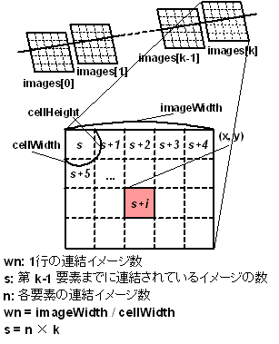

com.nttdocomo.ui.ImageMap
com.nttdocomo.ui.ImageMap
|
||||||||||
| 前のクラス 次のクラス | フレームあり フレームなし | |||||||||
| 概要: 入れ子 | フィールド | コンストラクタ | メソッド | 詳細: フィールド | コンストラクタ | メソッド | |||||||||
Object
イメージを縦横に並べて大きな画像として扱うイメージマップを定義します。
イメージを割り当てる単位をここではセルと呼びます。 セルのサイズは固定サイズで、コンストラクタで指定します。 セルを縦横に並べてそれぞれにイメージを割り当てることで、 ゲームの背景などに適した大きな画像を作成することができます。
どのセルにどのイメージを割り当てるかは、マップデータで指定します。 マップデータは byte の一次元配列で、 配列のインデックス(index)とセルの座標(x, y)との間には以下の関係があります。
index = mapWidth * y + x;
例えば、以下のような幅(mapWidth) 10、高さ(mapHeight) 8 のイメージマップの場合、 座標 (6, 4) にある X のセルのインデックスは 10 * 4 + 6 = 46 となります。
0 1 2 3 4 5 6 7 8 9
+---+---+---+---+---+---+---+---+---+---+
0 | | | | | | | | | | |
+---+---+---+---+---+---+---+---+---+---+
1 | | | | | | | | | | |
+---+---+---+---+---+---+---+---+---+---+
2 | | | | | | | | | | |
+---+---+---+---+---+---+---+---+---+---+
3 | | | | | | | | | | |
+---+---+---+---+---+---+---+---+---+---+
4 | | | | | | | X | | | |
+---+---+---+---+---+---+---+---+---+---+
5 | | | | | | | | | | |
+---+---+---+---+---+---+---+---+---+---+
6 | | | | | | | | | | |
+---+---+---+---+---+---+---+---+---+---+
7 | | | | | | | | | | |
+---+---+---+---+---+---+---+---+---+---+
イメージマップにマップデータを設定する際は、 マップデータと一緒にイメージの配列を指定します。
ImageMap(int cellWidth, int cellHeight, int mapWidth, int mapHeight,
int[] data, Image[] images, boolean concat)
setImageMap(int mapWidth, int mapHeight,
int[] data, Image[] images, boolean concat)
の concat 引数に false を指定した場合、
イメージの配列 images の各要素には、
セルに割りあてたい単独のイメージを指定します。
マップデータの配列 data の要素には、
セルに割り当てるイメージを、
イメージ配列の中のどのイメージを使用するかをイメージ配列中のインデックスで格納します。
この方法を用いると、
セルに割り当てられたイメージの幅および高さがセルの幅および高さよりも大きい場合は、
セルの幅および高さを超える部分は描画されません。
また、セルに割り当てられたイメージの幅および高さがセルの幅および高さよりも小さい場合は、
セル内のイメージの幅および高さを超える部分には何も描画されません。

[DoJa-4.0 (901i) 以降]
引数 concat に true を指定した場合、
イメージの配列 images の各要素には、セルに割り当てたい
(幅 cellWidth、高さ cellHeight の) 複数のイメージを左上から順に連結して
1 つのイメージとしたものを指定します。
ただし、描画時においては、
全ての要素に指定するイメージの幅同士、高さ同士は同一でなければなりません。
配列の各要素に縦横サイズの異なるイメージを指定し、
そのまま描画した場合にも例外は発生しませんが、
各セルにどのように描画されるかは機種依存です。
その場合のマップデータの配列 data の要素に指定する値 idx は、 images 配列の第 0 要素のイメージの左上から順に 「idx 番目に連結したイメージ」を使用することを表します。 連結していく具体的な方法は右図を参照してください。すなわち、 「idx (idx = 0, 1, 2, ...) 番目に連結したイメージ」 は、 images[k] の幅を imageWidth、images[k] に含まれているイメージ数を n (どちらも k によらず一定であることに注意) とし、 Java 言語と同じ記法(「/」は商、「%」は剰余)を用いると、 以下で指定される矩形領域のイメージとなります(イメージの左上が原点)。
x = cellWidth * (i % wn)
i = idx % n、wn = imageWidth / cellWidth。
y = cellHeight * (i / wn)
cellWidthcellHeightまた、cellWidth、cellHeight でそれぞれ割り切れない幅、 高さのイメージ配列が指定された場合は、 余っている右端と下端を切り捨てたイメージが指定されたものとして扱われます。 すなわち、上記計算式で算出された矩形領域が、 一部でも連結後イメージからはみでている場合には、 その矩形領域はマップデータの配列からは参照できません。
いずれのケースにおいても、以下の点に注意して下さい。
Graphics.drawImageMap(ImageMap, int, int)
が呼び出されるたびに行われます。
したがって、マップデータの配列(またはその要素)や、
イメージ配列(またはその要素)を設定し直すことで、
毎回異なる描画を行うことができます。
Graphics.drawImageMap(ImageMap, int, int)| コンストラクタの概要 | |
protected |
ImageMap()
アプリケーションが直接このコンストラクタを呼び出してオブジェクトを生成することはできません。 |
|
ImageMap(int cellWidth,
int cellHeight)
セルの幅と高さを指定してイメージマップを生成します。 |
|
ImageMap(int cellWidth,
int cellHeight,
int mapWidth,
int mapHeight,
byte[] data,
Image[] images)
推奨されていません。 DoJa-4.0 (901i) 以降では、 このコンストラクタは最大128個のイメージしか利用できないため ImageMap(int, int, int, int, int[], Image[])
に置き換えられました。 |
|
ImageMap(int cellWidth,
int cellHeight,
int mapWidth,
int mapHeight,
int[] data,
Image[] images)
セルの幅・高さと、マップデータを指定してイメージマップを生成します。 |
|
ImageMap(int cellWidth,
int cellHeight,
int mapWidth,
int mapHeight,
int[] data,
Image[] images,
boolean concat)
セルの幅・高さ、マップデータと、 イメージの配列に連結イメージが指定されているかどうかを指定して、 イメージマップを生成します。 |
| メソッドの概要 | |
void |
moveWindowLocation(int dx,
int dy)
イメージマップの中で表示する領域の幅と高さを変えずに座標だけを相対位置指定で設定します。 |
void |
setImageMap(int mapWidth,
int mapHeight,
byte[] data,
Image[] images)
推奨されていません。 DoJa-4.0 (901i) 以降では、 このメソッドは最大128個のイメージしか利用できないため setImageMap(int, int, int[], Image[])
に置き換えられました。 |
void |
setImageMap(int mapWidth,
int mapHeight,
int[] data,
Image[] images)
マップデータを設定します。 |
void |
setImageMap(int mapWidth,
int mapHeight,
int[] data,
Image[] images,
boolean concat)
イメージの配列に連結イメージが指定されているかどうかを指定して、 マップデータを設定します。 |
void |
setWindow(int x,
int y,
int width,
int height)
イメージマップの中で表示する領域を設定します。 |
void |
setWindowLocation(int x,
int y)
イメージマップの中で表示する領域の幅と高さを変えずに座標だけを設定します。 |
| クラス Object から継承したメソッド |
equals, getClass, hashCode, notify, notifyAll, toString, wait, wait, wait |
| コンストラクタの詳細 |
protected ImageMap()
public ImageMap(int cellWidth,
int cellHeight)
cellWidth - セルの幅をドット単位で指定します。cellHeight - セルの高さをドット単位で指定します。
IllegalArgumentException - 引数 cellWidth, cellHeight のどちらかまたは両方に 0 以下の値が指定された場合に発生します。
public ImageMap(int cellWidth,
int cellHeight,
int mapWidth,
int mapHeight,
byte[] data,
Image[] images)
ImageMap(int, int, int, int, int[], Image[])
に置き換えられました。
セルの幅・高さと、 マップデータを指定してイメージマップを生成します。
このコンストラクタは、プログラマが、
int[] data2 = new int[data.length];
for (int i = 0; i < data.length; i++) {
data2[i] = data[i];
}
としてから、引数に data の代わりに data2 を指定して、
ImageMap(cellWidth, cellHeight, mapWidth, mapHeight,
data2, images, false)
を呼び出した場合と同じ振る舞いをします。
cellWidth - セルの幅をドット単位で指定します。cellHeight - セルの高さをドット単位で指定します。mapWidth - マップの幅を指定します。mapHeight - マップの高さを指定します。data - マップデータの配列を指定します。images - イメージの配列を指定します。NullPointerException - 引数 data または引数 images に null が指定された場合に発生します。
IllegalArgumentException - 引数 cellWidth, cellHeight のいずれかまたは両方に 0 以下の値が指定された場合に発生します。
IllegalArgumentException - 引数 mapWidth, mapHeight のいずれかまたは両方に 0 未満の値が指定された場合に発生します。
IllegalArgumentException - 引数 data の配列の長さが引数 mapWidth * mapHeight よりも短い場合に発生します。
public ImageMap(int cellWidth,
int cellHeight,
int mapWidth,
int mapHeight,
int[] data,
Image[] images)
セルの幅・高さと、マップデータを指定してイメージマップを生成します。
this(cellWidth, cellHeight, mapWidth, mapHeight,
data, images, false)
を呼び出すことと同じです。
cellWidth - セルの幅をドット単位で指定します。cellHeight - セルの高さをドット単位で指定します。mapWidth - マップの幅を指定します。mapHeight - マップの高さを指定します。data - マップデータの配列を指定します。images - イメージの配列を指定します。
NullPointerException - 引数 data または引数 images に
null が指定された場合に発生します。
IllegalArgumentException - 引数 cellWidth、cellHeight
のいずれかまたは両方に 0 以下の値が指定された場合に発生します。
IllegalArgumentException - 引数 mapWidth、mapHeight
のいずれかまたは両方に 0 未満の値が指定された場合に発生します。
IllegalArgumentException - 引数 data の配列の長さが引数
mapWidth * mapHeight よりも短い場合に発生します。
public ImageMap(int cellWidth,
int cellHeight,
int mapWidth,
int mapHeight,
int[] data,
Image[] images,
boolean concat)
セルの幅・高さ、マップデータと、 イメージの配列に連結イメージが指定されているかどうかを指定して、 イメージマップを生成します。 引数 concat に指定する値によって、 images 配列に格納されている各イメージが、 連結されたイメージなのか、単独のイメージなのかを指定することができます。
それぞれの場合におけるマップデータの指定方法や、
concat に true を指定した場合の イメージ連結の方法については、
このクラスの説明を参照して下さい。
イメージマップオブジェクトは、引数 data と images のオブジェクトの参照を保持し続けます。 したがって、引数で渡されたマップデータ配列の要素や、 イメージ配列の各要素の描画内容を変更すると、 マップデータやイメージも変更されます。
ウィンドウはマップと同じ大きさに初期化されます。
cellWidth - セルの幅をドット単位で指定します。cellHeight - セルの高さをドット単位で指定します。mapWidth - マップの幅を指定します。mapHeight - マップの高さを指定します。data - マップデータの配列を指定します。images - マップデータが参照するイメージの配列
(または連結したイメージの配列)を指定します。
引数 concat に true を指定して、
連結したイメージの総数が 231 - 1 個を超えている場合、
超えた部分が参照されることはありません。concat - 引数 images に指定されている各イメージが、
マップデータから参照されるイメージを連結したものである場合には
true を、
単独のイメージである場合には false を指定します。
NullPointerException - 引数 data または引数 images に
null が指定された場合に発生します。
IllegalArgumentException - 引数 cellWidth、cellHeight
のいずれかまたは両方に 0 以下の値が指定された場合に発生します。
IllegalArgumentException - 引数 mapWidth、mapHeight
のいずれかまたは両方に 0 未満の値が指定された場合に発生します。
IllegalArgumentException - 引数 data の配列の長さが引数
mapWidth * mapHeight よりも短い場合に発生します。